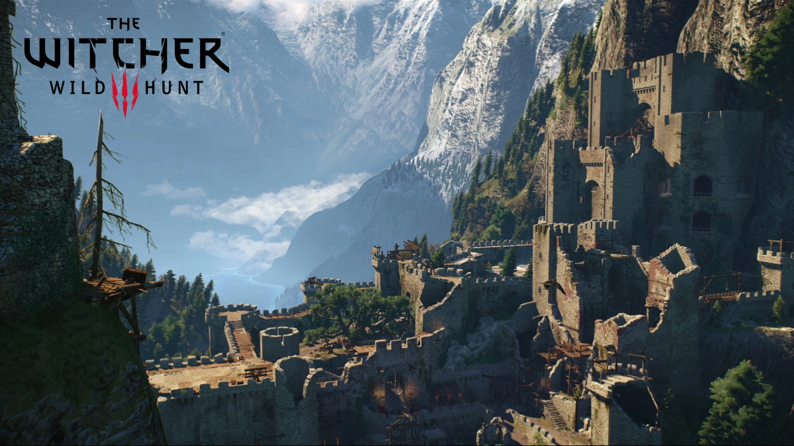

The Witcher 3
L'un des jeux vidéo les plus vendu et acclamés de tous les temps inspirés des livres de Andrzej Sapkowski.
Bestiaire
Histoire
Geralt de Riv est un sorceleur, un chasseur de monstres professionnel, doté de pouvoirs surhumains et d'une longévité. Il parcourt le continent à la recherche de créatures maléfiques. Mais sa vie prend un tournant lorsqu'il rencontre une puissante magicienne et une jeune princesse qui cachent un lourd secret.
Lire l'histoire